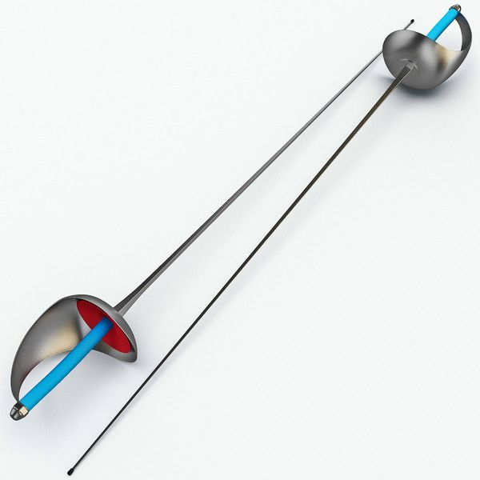
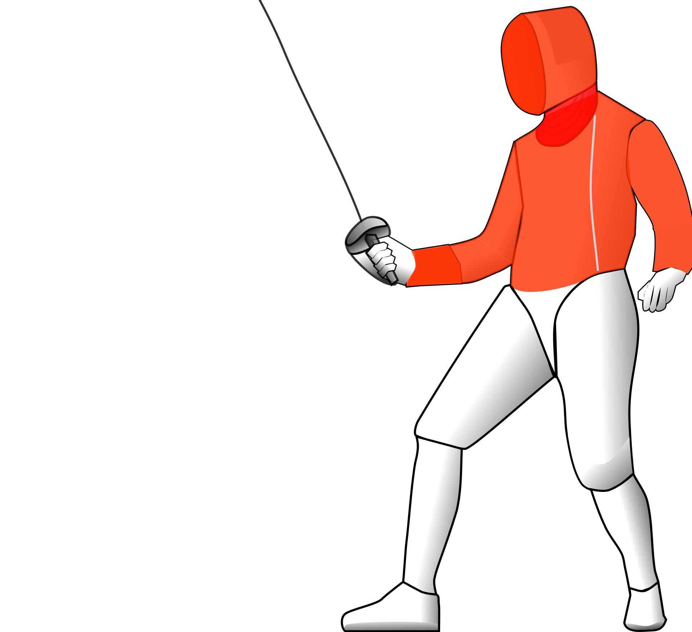

The Sabre is one of the three weapons used in fencing. It is unique in that it is designed for cutting as well as thrusting. The sabre developed from the backsword of the Elizabethans and the heavy cavalry sabre. The blade is V-shaped with the point folded over to form a button. It is widely considered the fastest out of the three weapons
The Blade

The Sabre blade is rectangular in cross section with a V-shaped end which transitions to a flat rectangular shaped end. This allows the end of the blade to be flexible. The blade is no longer than 88cm in length.
The guard of the sabre is one smooth piece which is designed to provide the hand adequate protection to ensure that injury does not occur. Unlike the foil or épée, the sabre only uses a traditional grip, as most modern pistol grips are incompatible with the shape of the guard.
Rules of Sabre

The Sabre is used as a cutting and thrusting weapon. A valid touch can be made with the cutting edge of the blade, in addition to the tip. Hence a button at the tip is not required. Instead, an electric current flows through the blade. When the blade comes into contact with the opponents lamé, the circuit is completed and a touch is registered.
Like foil, Sabre fencing adopts Priority Rules.. When both fencers touch at the same time, the point goes to the fencer with priority.The basic rules are whoever initiates an attack first obtains priority. However, if the defender sucessfully parries their opponents attack, they priority shifts and they can go for a riposte.
In Sabre fencing, it is generally easier to attack than to defend. Hence, sabre bouts are typically very high speed. In response, the rules of sabre were changed to probibit the feet from crossing each other. This ensures that fencers don't just run at each other when given an opportunity.